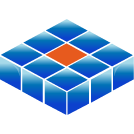

GlassHood is AI-infrastructure monitoring — it runs on Microsoft Azure and watches a live system on Google Cloud, cross-cloud, with no stored credentials.

Cross-cloud topology
One container on Azure reading a live system on Google Cloud.
Federated identity
Short-lived federated tokens, no stored keys, read-only by construction.
The pipeline
What’s live today, and what’s on the roadmap.
Cross-cloud topology
GlassHood is a single container — a FastAPI backend that serves a React UI, behind JWT authentication. It was ported from Google Cloud Run to Azure Container Apps and runs in Switzerland North.
The system it monitors — ColdVault — runs on Google Cloud and stays there. GlassHood reaches across the cloud boundary to read ColdVault’s live logs and monitoring metrics. Nothing moves to Azure; GlassHood observes, read-only, from the other side.
Federated identity — no stored keys
The container authenticates to Google Cloud with Workload Identity Federation. Its Azure managed identity is federated into Google Cloud IAM and, on demand, exchanged for a short-lived token that impersonates a read-only service account. No long-lived keys are stored anywhere — every credential is minted fresh, used briefly, discarded.
That account holds viewer permissions only (logging and monitoring), so the blast radius is observation, not control. GlassHood is read-only by construction: even a full compromise of the container cannot modify the monitored system.
The pipeline — today and roadmap
What runs today is the cross-cloud observation path: collect, analyse, report. The analytics layer beyond it is designed but not yet built — shown as roadmap, never as current capability.
Live today
- Cross-cloud collection of logs and monitoring metrics from Google Cloud
- Statistical anomaly detection over the collected signals
- Compliance reporting — ALCOA+, EU Annex 11, and 21 CFR Part 11
- ServiceNow synchronisation for alerts and incidents
Roadmap — not yet built
- Databricks medallion pipeline (bronze → silver → gold star schema)
- Power BI dashboards for uptime and operational analytics
- Natural-language query over the monitoring data
A note on the name: this is a Google-Cloud-native monitor hosted on Azure. The “Azure” is where GlassHood runs and how it federates its identity — not a claim that it monitors Azure resources today.